Général¶
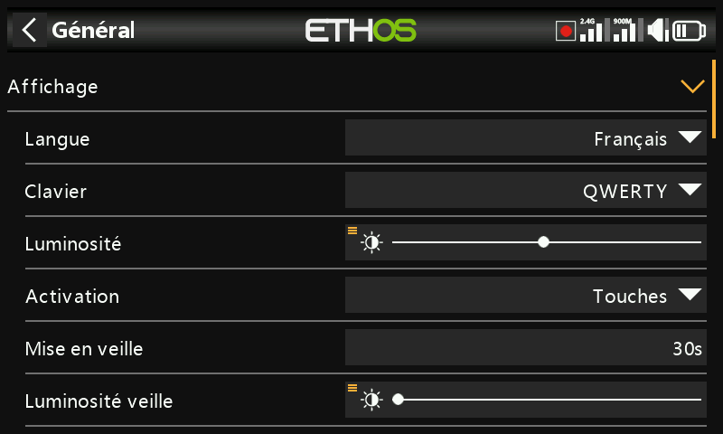
Couvre l'affichage, les paramètres audio, le vario, le retour vibreur et la barre infos supérieure.
Affichage¶
- Langue — la langue des menus de la radio (English, 中文, Česky, Deutsch, Español, Français, עברית, Italiano, Nederlands, Norsk, Português Brasileiro, Polish, Português, et d'autres).
- Clavier — choix de la disposition du clavier virtuel parmi QWERTY, QWERTZ et AZERTY.
- Luminosité — un curseur pour la luminosité du rétroéclairage ; un appui
long sur
ENTpermet de la piloter depuis une source (par exemple un potentiomètre ou un curseur, comme dans l'exemple ci-dessous), ou de la forcer au minimum/maximum.
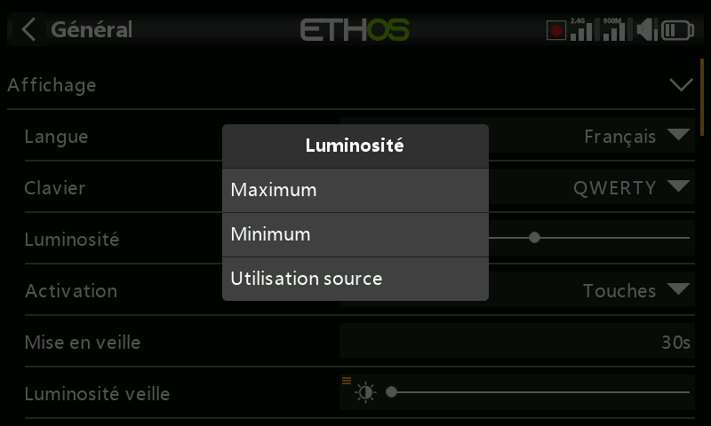
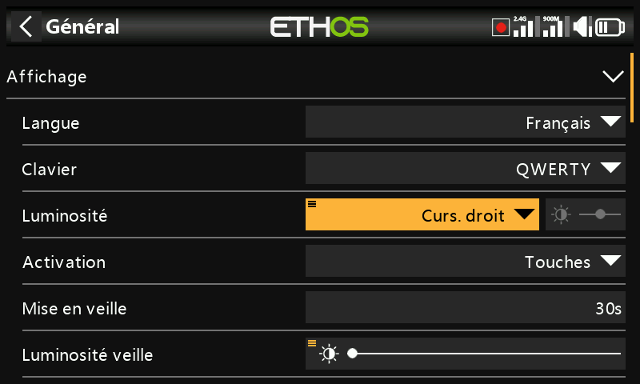
!!! note Si Luminosité est égale à Luminosité veille, l'écran tactile reste actif même en « veille ».
- Activation — les éléments qui réveillent le rétroéclairage après la mise en veille (plusieurs options peuvent être sélectionnées simultanément) : Toujours (pas de mise en veille), Manches, Inters, Gyro (inclinaison de la radio). Les touches réveillent toujours l'écran, quels que soient ces réglages.
- Mise en veille — durée d'inactivité avant l'extinction du rétroéclairage (non modifiable si Activation est réglé sur Toujours).
- Luminosité veille — luminosité du rétroéclairage pendant la veille.
- Mode sombre — choix entre les modes clair ou sombre de l'affichage.
- Couleur de surbrillance — la couleur de surbrillance de l'interface
(par défaut
#F8B038).
Réglages audio¶
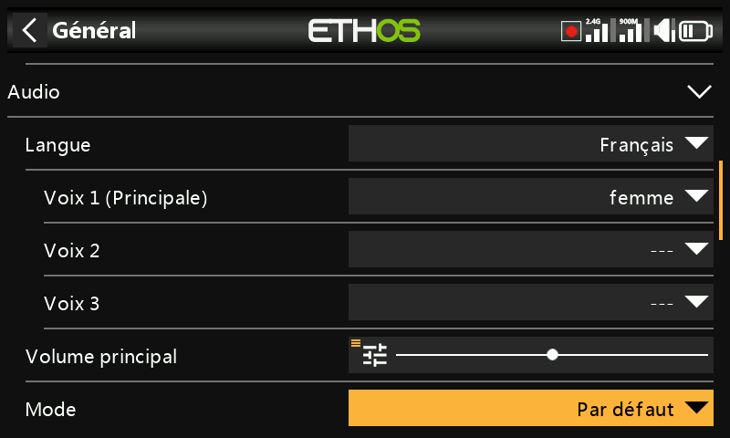
- Langue audio — langue des annonces vocales.
-
Choix des voix — Ethos prend en charge plusieurs packs vocaux simultanés :
-
Voix 1 (Princ.) — utilisée pour toutes les annonces système Ethos. Pour l'anglais, le choix par défaut se fait entre les packs américain (
us) et britannique (gb), lus depuisaudio/en/us/systemetaudio/en/gb/system. Les fichiers audio de l'utilisateur proposés par la fonction spéciale Lire audio se placent respectivement dansaudio/en/us/ouaudio/en/gb/. - Voix 2 / Voix 3 — packs de voix alternatives, par exemple une voix TTS
personnalisée. Chacune nécessite la même structure de dossiers que la
Voix 1 — par exemple une voix appelée « Susan » nécessite
audio/en/Susan/pour les fichiers audio de l'utilisateur etaudio/en/Susan/systempour ses fichiers audio système (chaque voix doit avoir un dossier/system, puisque c'est là que Lire valeur et les annonces du chrono vont chercher leurs sons ; une liste.csvdes fichiers audio système fournis en standard est incluse avec chaque version audio). Une fois installée, une voix peut être affectée par chrono et par fonction Lire audio — ou même définie comme Voix 1 pour remplacer purement et simplement les annonces système. -
Voix « default » — installée automatiquement comme solution de repli sûre (et utilisée pour éviter les problèmes de conversion depuis les installations 1.4.x) : si la Voix 1 n'est pas déjà définie lors d'une installation ou d'une mise à jour, elle est réglée sur
default, avec lecture depuisaudio/en/default/system. Les fichiers audio personnalisés fréquemment demandés pour Lire audio se trouvent dansaudio/en/default/. -
Volume principal — un curseur pour contrôler le volume audio général (un appui long sur
ENTpermet de le piloter depuis un potentiomètre) ; des bips sont émis pendant le réglage afin d'aider à juger le niveau à l'oreille. - Modes audio :
- Silencieux — pas d'audio (une alerte sera tout de même émise au démarrage si la vérification du mode silencieux est activée).
- Alarmes uniquement — seules les alarmes seront jouées.
- Par défaut — les sons sont activés.
- Fréquent — ajoute des bips d'erreur lors du dépassement des valeurs minimale ou maximale.
- Toujours — ajoute des bips lors de la navigation dans les menus, en plus des sons du mode « Fréquent ».
-
Bluetooth (X20S/HD/Pro/R/RS uniquement) — relaie l'audio vers un appareil Bluetooth appairé (casque, etc.). Appuyez sur Chercher périphériques, placez l'appareil cible en mode d'appairage, puis sélectionnez-le dès qu'il est trouvé :
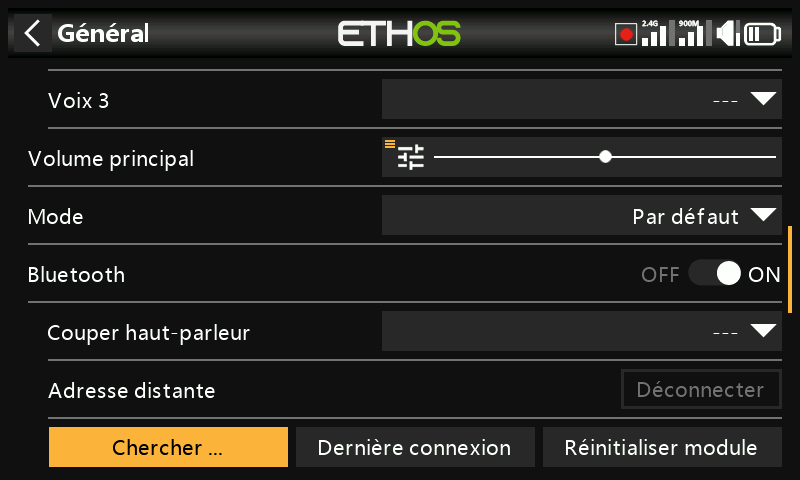
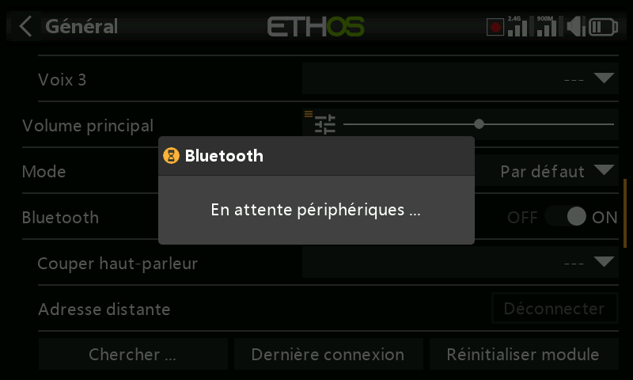
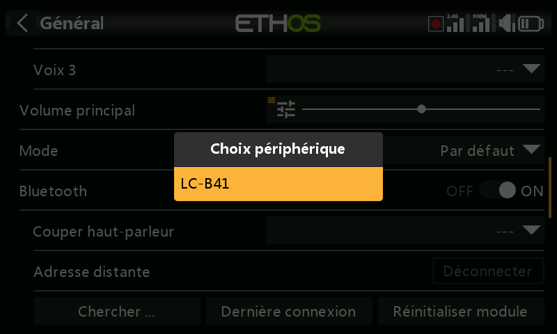
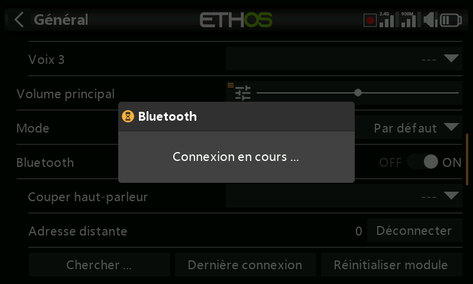
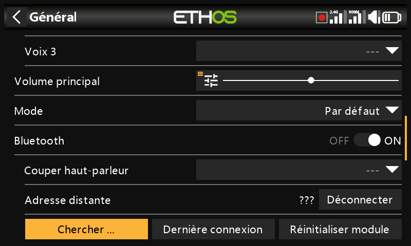
Couper haut-parleur contrôle alors le haut-parleur intégré — toujours activé, activé uniquement lorsque la télémétrie est active, ou contrôlé par une source telle qu'un inter. Le système se souvient du périphérique Bluetooth ; pour un fonctionnement normal, allumez la radio avant le périphérique Bluetooth, et comptez quelques secondes après sa connexion pour que la coupure du haut-parleur s'active à nouveau.
Vario¶
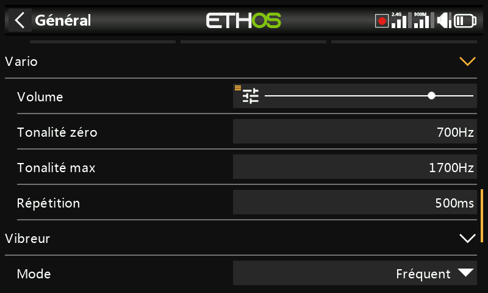
- Volume — volume relatif de la tonalité du vario.
- Tonalité zéro — fréquence de la tonalité lorsque le taux de montée est nul.
- Tonalité max — fréquence de la tonalité à la vitesse de montée maximale.
- Répétition — délai entre les bips à la tonalité zéro.
Reportez-vous également au capteur VSpeed dans Télémétrie et à la fonction spéciale Vario pour d'autres paramètres du vario.
Vibreur¶
- Intensité — un curseur pour l'intensité des vibrations.
- Mode — les mêmes options que les modes audio ci-dessus.
Emplacement de stockage (X18 et X20 Pro/R/RS)¶
Ces radios disposent d'une mémoire eMMC interne de 8 Go. Par défaut, Ethos l'utilise, ce qui rend l'utilisation de la SD card facultative — mais vous pouvez sélectionner l'eMMC, une SD card, ou une combinaison des deux. Si le choix se porte sur le déplacement du système et des modèles vers une SD card, copiez tous les dossiers et fichiers concernés (y compris l'audio et les bitmaps) avant de changer l'emplacement de stockage.
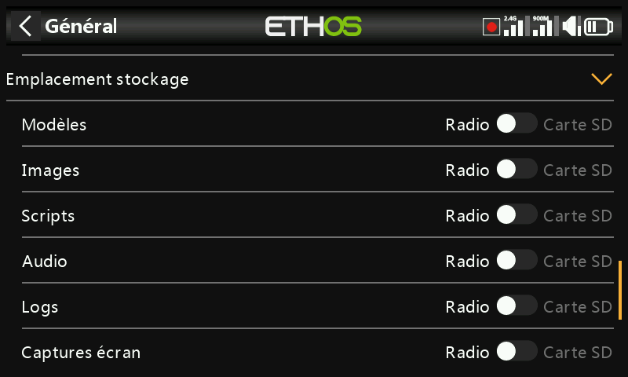
Barre infos supérieure¶
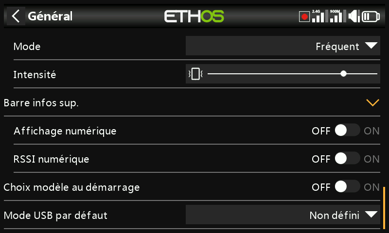
- Affichage numérique — affiche la tension de la batterie de la radio sous forme de valeur numérique plutôt que sous forme de barre dans la barre infos supérieure.
- RSSI numérique — idem, pour les RSSI 2,4 GHz et 900 MHz.
- Choix modèle au démarrage — affiche l'écran de sélection du modèle à la mise sous tension, avant que les alertes de la liste de contrôle du modèle précédemment sélectionné ne s'affichent, ce qui évite d'avoir à annuler ces alertes avant de choisir un autre modèle. Par défaut, le dernier modèle utilisé est mis en surbrillance.
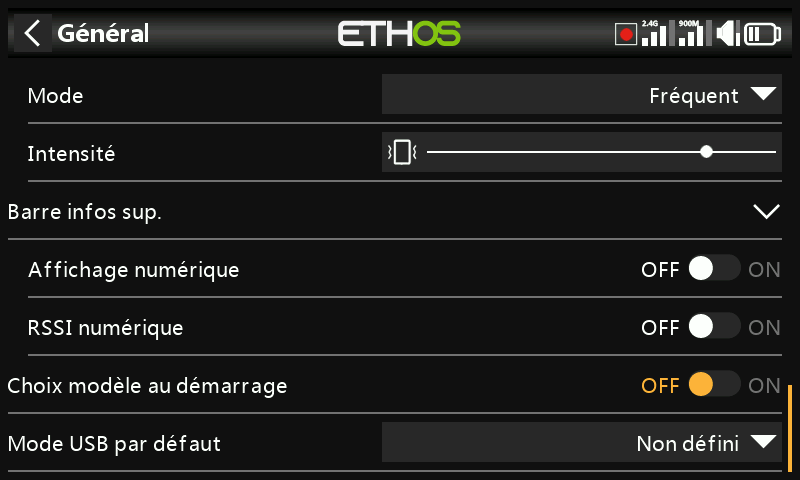
Présélection du mode USB¶
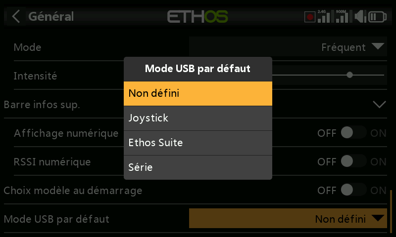
Ce qui se produit automatiquement lorsque la radio est connectée à un PC via USB :
- Non défini — une boîte de dialogue apparaît au moment de la connexion pour proposer le choix.
- Joystick — passe immédiatement en mode Joystick pour l'utilisation avec un simulateur RC.
- Ethos Suite — passe immédiatement en mode Ethos pour l'utilisation avec Ethos Suite.
- Série — passe immédiatement en mode Série, en transmettant les traces de débogage Lua via USB-Serial à 115200 bps (un pilote de port COM virtuel Windows peut être nécessaire).